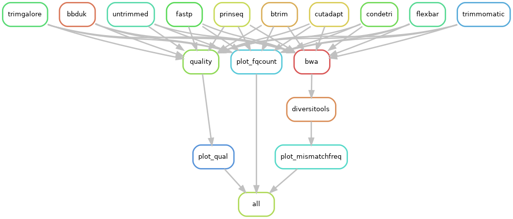
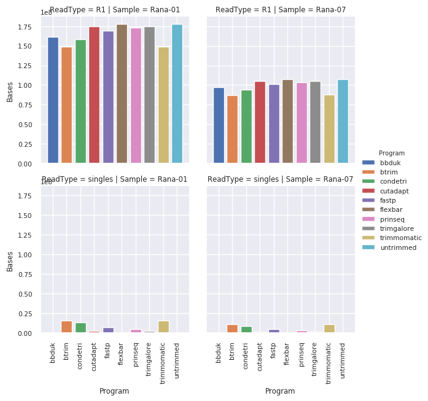
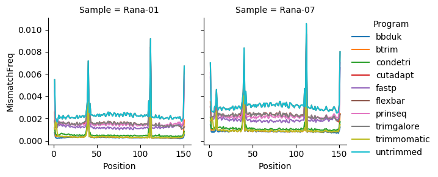

Trimming¶
Sequencing data are usually provided as raw reads in the FASTQ format, which usually require pre-processing prior to further analysis. Sequences often carry particular sequence oligonucleotides, These may have been introduced by experimental design (e.g., sample barcodes), be specific to a sequencing platform (e.g., adapter sequences) or be a real biological signal (e.g., spliced leader). The most used pre-processing step involves read trimming which:
- Trims adaptors and primers from reads
- Filters on base qualities, in different ways depending on the program
It is important to trim and remove adaptors to avoid issues in downstream analyses such as in transcriptomics [14], variant analysis or de novo assembly.
There are many tools that have been developed for this purpose and an extensive list of them are presented below. Each has its own advantage and some of them have already been benchmarked [5]. Here tools for trimming and adaptor removal will be benchmarked in the context of consensus calling and variant calling for viral genomes. Duplicate removal and contaminant sequence filtering will be covered elsewhere.
Tools¶
How to run¶
Btrim:¶
Trims low quality at both or either ends of a fastq sequence, identify barcodes, handle indels in adapters and barcodes. The adaptors are provided as a 6 column text-tab delimited file where the user can specify which region in the sequence to search for adaptors in. See btrim64. To trim Illumina adaptor AGATCGGAAGAGC with a window size of 10 and a cutoff for average quality scores within the moving window for quality trimming of 25, where only 3’-end trimming is carried out, keeping a minimal length sequence of 40:
btrim64 -w 10 -a 25 -p illumina_adapter.txt -3 -P -o output.fastq -l 40 -t <(gunzip -c path_to_your_fastq/*.gz ) -C -z
The disadvantage is that it does not deal directly with paired-end reads, so the individual files need to be trimmed first and then the perl script paired_end_trim.pl is used to create the files where both ends passed the trimming. Another two files (*.se) are generated for the reads where only one end passed the trimming.
btrim64 -a 25 -q -t input_R1.fq -o output_R1.25 -s output_R1.sum25
btrim64 -a 25 -q -t input_R1.fq -o output_R2.25 -s output_R2.sum25
paired_end_trim.pl output_R1.sum25 output_21.sum25 output_R1.25 output_R2.25
Works directly on .gz files. Provides total sequence count and length distribution.
Default:
- maximum number of errors in 5’-adaptor [default=3]
- maximum number of errors in 3’-adaptor [default=4]
- minimal insert size [default=25]
- size of moving window for quality trimming [default=5]
- cutoff for average quality scores within the moving window for quality trimming [default=15]
Disadvantages: Dealing with paired-end reads is a two step process.
ConDeTri:¶
Single-end and paired-end trimming independent from user interaction, trim and remove reads with low quality scores. See condetri_v2.2.pl -h
condetri.pl -sc=33 -fastq1=input_R1.fq -fastq2=input_R2.fq -prefix=output
Default:
- HQ = Hiqh quality threshold [25].
- LQ = Low quality threshold [10].
- Frac = Fraction of read that must exceed hq [0.8].
- Minlen = Min allowed read length [50].
- MH = When this number of sequential HQ bases is reached, the trimming stops [5].
- ML = Max number of LQ bases allowed after a stretch of HQ bases from 3’-end [1].
Disadvantages: Seems very very slow.
Cutadapt:¶
See cutadapt -help
--quality-base N Assume that quality values in FASTQ are encoded as
ascii(quality + N). This needs to be set to 64 for
some old Illumina FASTQ files. Default: 33
-m LEN[:LEN2], --minimum-length LEN[:LEN2]
Discard reads shorter than LEN. Default: 0
cutadapt -a ADAPT1 -A ADAPT2 [options] -o out1.fastq -p out2.fastq in1.fastq in2.fastq
Trim_galore¶
Trim_galore is a wrapper around cutadapt with a few additions. See trim_galore -h
Flexbar:¶
Can do color-space reads (454), maintains read pairing and separates barcode reads.
The program Flexbar preprocesses high-throughput sequencing data efficiently. It demultiplexes barcoded runs and removes adapter sequences. Several adapter removal presets for Illumina libraries are included. Flexbar computes exact overlap alignments using SIMD and multicore parallelism. Moreover, trimming and filtering features are provided, e.g. trimming of homopolymers at read ends. Flexbar increases read mapping rates and improves genome as well as transcriptome assemblies. Unique molecular identifiers can be extracted in a flexible way. The software supports data in fasta and fastq format from multiple sequencing platforms. See flexbar -hh
PRINSEQ:¶
One of the big advantages of prinseq are the large number of different graphical outputs. See prinseq-lite.pl -help
perl prinseq-lite.pl -verbose -fastq test_1.fq -fastq2 test_2.fq -ns_max_n 0 -out_good test_no_ns -out_bad test_with_ns
Singletons will automatically be filtered and stored in separate files (here test_no_ns_1_singletons.fastq and test_no_ns_2_singletons.fastq) in addition to the files test_no_ns_1.fastq, test_no_ns_2.fastq, test_with_ns_1.fastq, and test_with_ns_2.fastq.
Disadvantages: No direct way of dealing with paired end that are zipped, you will need to unzip on the fly:
/prinseq <your parameters> <(gzip -d -c input.fq.gz)
Or if you have paired-end, you need to unzip-trim (zip if you want to keep your reads compressed) and then match the pairs up again (https://github.com/sestaton/Pairfq)
gzip -dc input_R1.fastq.gz | prinseq-lite.pl -fastq stdin -out_bad null -out_good stdout \
-trim_qual_right 20 -min_qual_mean 20 -min_len 35 -log prinseq.input_R1.log | gzip > input_R1.trim.gz
gzip -dc input_2.fastq.gz | prinseq-lite.pl -fastq stdin -out_bad null -out_good stdout \
-trim_qual_right 20 -min_qual_mean 20 -min_len 35 -log prinseq.input_R2.log | gzip > input_R2.trim.gz
pairfq makepairs -f input_R1.trim.gz -r input_R2.trim.gz -fp output_R1.trim.fastq-common.out.gz \
-rp output_R2.trim.fastq-common.out.gz -fs output_R1.trim.fastq-unique.out.gz -rs output_R2.trim.fastq-unique.out.gz --compress gzip
BBDuk:¶
One annoying thing about BBDuk.sh is that autocompletion of file names is reduced due to the way arguments are specified for the bash script (e.g., -in1=input_R1.fq). BBDuk uses a kmer based approach for doing the quality trimming. It also has a large number of other data filtering options. See bbduk.sh -h
Benchmark¶
Current benchmarking pipeline available here trimming/trimtest.snake
Commands used for benchmarking:
btrim64 -a 25 -l 50 -q -s tmp.r1.s -o output_R1 -t input_R1.fastq.gz
btrim64 -a 25 -l 50 -q -s tmp.r2.s -o output_R2 -t input_R2.fastq.gz
paired_end_trim.pl tmp.r1.s tmp.r2.s output_R1 output_R2
cat output_R1.se output_R2.se > output_unpaired.fastq
mv output_R1.pe output_R1.fastq
mv output_R2.pe output_R2.fastq
condetri.pl -sc=33 -fastq1=input_R1.fastq.gz -fastq2=input_R2.fastq.gz -prefix=output
cutadapt -m 50 -q 25 -o output_R1.fastq.gz -p output_R2.fastq.gz --too-short-output=tooshort.1.fastq.gz --too-short-paired-output=tooshort.2.fastq.gz input_R1.fastq.gz input_R2.fastq.gz
cutadapt -m 50 -q 25 -o rescued.a.fastq.gz tooshort.1.fastq.gz
cutadapt -m 50 -q 25 -o rescued.b.fastq.gz tooshort.2.fastq.gz
cat rescued.a.fastq.gz rescued.b.fastq.gz > rescued.fastq.gz
gunzip -c rescued.fastq.gz > output_unpaired.fastq
gunzip -c output_R1.fastq.gz > output_R1.fastq
gunzip -c output_R2.fastq.gz > output_R2.fastq
flexbar -r input_R1.fastq.gz -p input_R2.fastq.gz -qt 25 -m 50 -qf i1.8 --adapter-preset TruSeq -ap ON -s
mv flexbarOut_1.fastq output_R1.fastq
mv flexbarOut_2.fastq output_R2.fastq
cat flexbarOut_1_single.fastq flexbarOut_2_single.fastq > output_unpaired.fastq
gunzip -c input_R1.fastq.gz > tmp_R1.fq
gunzip -c input_R2.fastq.gz > tmp_R2.fq
prinseq-lite.pl -verbose -min_qual_mean 25 -min_len 50 -fastq tmp_R1.fq -fastq2 tmp_R2.fq -ns_max_n 0 -out_good tmp_no_ns -out_bad null
cat tmp_no_ns_1_singletons.fastq tmp_no_ns_2_singletons.fastq > output_unpaired.fastq
mv tmp_no_ns_1.fastq output_R1.fastq
mv tmp_no_ns_2.fastq output_R2.fastq
TrimmomaticPE -phred33 input_R1.fastq.gz input_R2.fastq.gz output_R1.fastq tmp1_unpaired.fq output_R1.fastq tmp2_unpaired.fq ILLUMINACLIP:TruSeq2-PE.fa:2:30:10 LEADING:3 TRAILING:3 SLIDINGWINDOW:5:25 MINLEN:50
cat tmp1_unpaired.fq tmp2_unpaired.fq > output_unpaired.fastq
trim_galore --quality 25 --length 50 --retain_unpaired --stringency 1 --dont_gzip --paired input_R1.fastq.gz input_R2.fastq.gz
cat input_R1_unpaired_1.fq input_R2_unpaired_2.fq > output_unpaired.fastq
mv input_R1_001_val_1.fq output_R1.fastq
mv input_R2_001_val_2.fq output_R2.fastq
gunzip -c input_R1.fastq.gz > tmp_R1.fq
gunzip -c input_R2.fastq.gz > tmp_R2.fq
bbduk.sh in1=tmp_R1.fq in2=tmp_R2.fq out1=output_R1.fastq out2=output_R2.fastq qtrim=lr trimq=25 minlen=50 rieb=false outm1=tmp1_unpaired.fq outm2=tmp2_unpaired.fq overwrite=true
cat tmp1_unpaired.fq tmp2_unpaired.fq > tmp_unpaired.fq
bbduk.sh in=tmp_unpaired.fq out=output_unpaired.fastq qtrim=lr trimq=25 minlen=50 overwrite=true
Time comparison¶
btrim < cutadapt < trimgalore < trimmomatic
Number of reads remaining¶
More paired reads are removed for btrim, condetri and trimmomatic but a reasonable number are rescued as single reads.
Number of bases kept¶
The effect of trimming in terms of bases lost is not dramatically marked for btrim, condetri, trimmomatic and bbduk.
Per read position quality¶
The average quality is higher for trimmomatic and btrim. The decrease in quality over the length of the read is not as steep. Condetri per base quality is slightly lower but prinseq, trimgalore, cutadapt have even lower average quality and flexbar has the lowest average quality. Flexbar has very few single reads rescued, hence the distribution. Some further singleton quality filtering is probably needed for cutadapt, trim_galore and flexbar.
Per read position mismatch¶
Trimmomatic and btrim have very low levels of mismatch frequency with condetri having a slightly higher mismatch frequency. Trimgalore, cutadapt and prinseq have higher levels of mismatches along the length of the read. Flexbar has the worst level of mismatch frequency.
In the context of low-frequency variant calling, Trimmomatic and btrim are good options. BBDuk also performs well, in this case it does not rescue any singletons but does not discard as many reads it does this by trimming the length more agressively, which results in a higher average quality to the right of the read. Condetri also performs reasonably well.
If there is a limited depth of coverage across the genome, then the poor trimming will also affect the consensus calling so it is advisable to also use trimmomatic and btrim.
The tools that use a window or k-mer approach perform better in the metrics used here.
References¶
| [1] | E Aronesty. Comparison of sequencing utility programs. open bioinforma j 7: 1–8. 2013. |
| [2] | Anthony M Bolger, Marc Lohse, and Bjoern Usadel. Trimmomatic: a flexible trimmer for illumina sequence data. Bioinformatics (Oxford, England), 30:2114–2120, August 2014. doi:10.1093/bioinformatics/btu170. |
| [3] | Shifu Chen, Yanqing Zhou, Yaru Chen, and Jia Gu. Fastp: an ultra-fast all-in-one fastq preprocessor. Bioinformatics (Oxford, England), 34:i884–i890, September 2018. doi:10.1093/bioinformatics/bty560. |
| [4] | Murray P Cox, Daniel A Peterson, and Patrick J Biggs. Solexaqa: at-a-glance quality assessment of illumina second-generation sequencing data. BMC bioinformatics, 11:485, September 2010. doi:10.1186/1471-2105-11-485. |
| [5] | Cristian Del Fabbro, Simone Scalabrin, Michele Morgante, and Federico M Giorgi. An extensive evaluation of read trimming effects on illumina ngs data analysis. PloS one, 8:e85024, 2013. doi:10.1371/journal.pone.0085024. |
| [6] | John P Didion, Marcel Martin, and Francis S Collins. Atropos: specific, sensitive, and speedy trimming of sequencing reads. PeerJ, 5:e3720, 2017. doi:10.7717/peerj.3720. |
| [7] | Matthias Dodt, Johannes T Roehr, Rina Ahmed, and Christoph Dieterich. Flexbar-flexible barcode and adapter processing for next-generation sequencing platforms. Biology, 1:895–905, December 2012. doi:10.3390/biology1030895. |
| [8] | Yong Kong. Btrim: a fast, lightweight adapter and quality trimming program for next-generation sequencing technologies. Genomics, 98(2):152–153, 2011. |
| [9] | Timo Lassmann. Tagdust2: a generic method to extract reads from sequencing data. BMC bioinformatics, 16:24, January 2015. doi:10.1186/s12859-015-0454-y. |
| [10] | Marcel Martin. Cutadapt removes adapter sequences from high-throughput sequencing reads. EMBnet.journal, 17(1):10–12, 2011. URL: http://journal.embnet.org/index.php/embnetjournal/article/view/200, doi:10.14806/ej.17.1.200. |
| [11] | Paula Pérez-Rubio, Claudio Lottaz, and Julia C Engelmann. Fastqpuri: high-performance preprocessing of rna-seq data. BMC bioinformatics, 20:226, May 2019. doi:10.1186/s12859-019-2799-0. |
| [12] | Robert Schmieder and Robert Edwards. Quality control and preprocessing of metagenomic datasets. Bioinformatics (Oxford, England), 27:863–864, March 2011. doi:10.1093/bioinformatics/btr026. |
| [13] | Linnéa Smeds and Axel Künstner. Condetri–a content dependent read trimmer for illumina data. PloS one, 6:e26314, 2011. doi:10.1371/journal.pone.0026314. |
| [14] | Claire R Williams, Alyssa Baccarella, Jay Z Parrish, and Charles C Kim. Trimming of sequence reads alters rna-seq gene expression estimates. BMC bioinformatics, 17:103, February 2016. doi:10.1186/s12859-016-0956-2. |